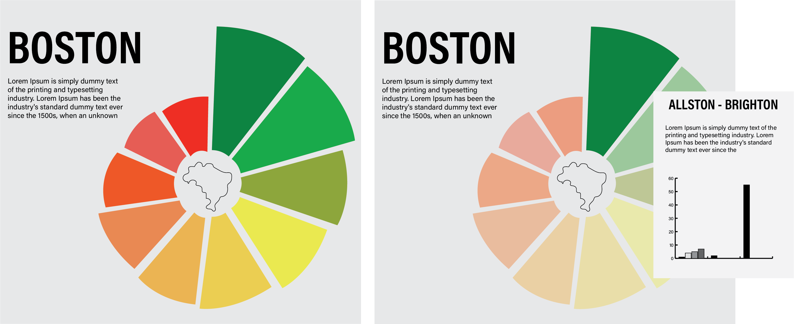

About the Locality
Located in Northeast New England, Boston is a historic American city with a deep connection to the nation's founding. Boston is the state capital of Massachusetts, with a population of 675,649 and home to multiple world-class universities like Harvard and MIT. There are many reasons to move to the city, and in this article, we'll talk about the ten safest neighborhoods in Boston in 2023. With low crime rates and a friendly community, you can feel safe and secure in this vibrant city.
Crimes around the years 2020-2022
10 Safest Neighborhoods in Boston
Whether you're looking for a Boston neighborhood that's known for its historical landmarks or a funky, lively hood in Cambridge, we've got you covered. Here's our guide to the best neighborhoods in Boston for newcomers.
Localities
Click on a locality to view its overview.